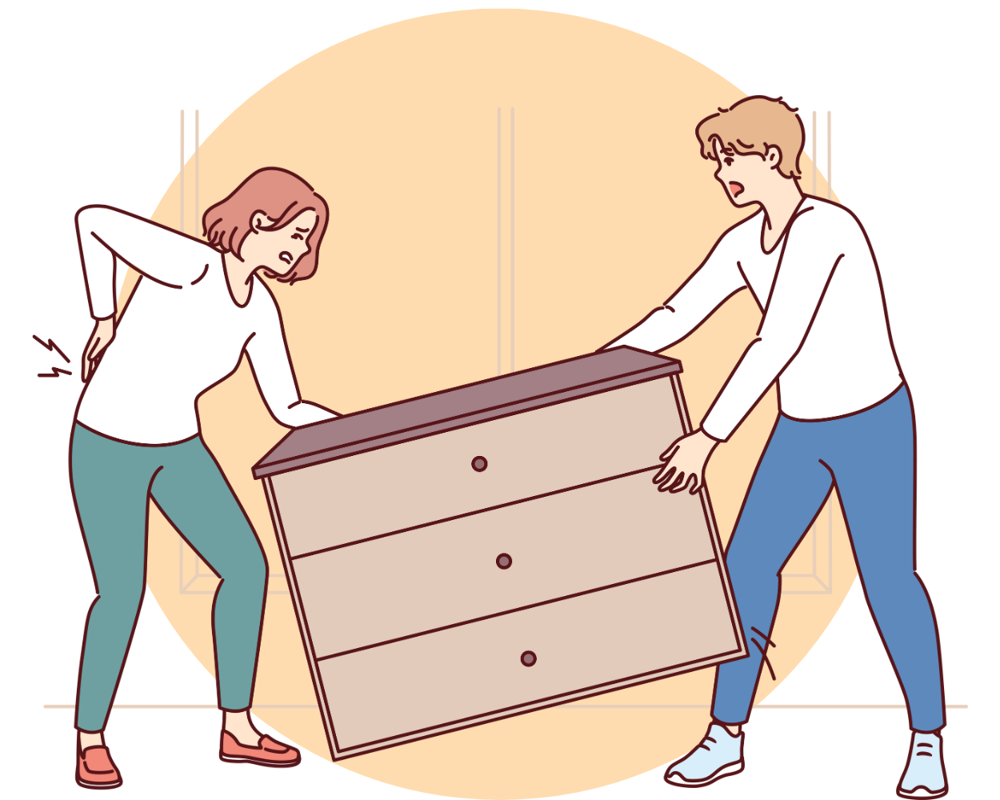

Konflikthantering
En central orsak till kränkningar är dåligt hanterade konflikter. Det är ofta inte själva konflikten som skapar problem, utan hur den hanteras.
Positiva aspekter av konflikter:
- Konflikter kan vara tecken på en arbetsplats med ett öppet debattklimat där medarbetare känner sig trygga att uttrycka sina åsikter
- Meningsskiljaktigheter kan leda till kreativa lösningar och innovationer
Risker med konflikter
- Om konflikten hanteras illa, kan den leda till långvariga spänningar, kränkningar och negativa konsekvenser för arbetsmiljön
- Konflikter är särskilt problematiska i organisationer med höga stressnivåer, eftersom dessa miljöer redan har förhöjd risk för kränkande beteenden
Vill du lära dig mer om konflikthantering?
Avonova erbjuder en dedikerad 3 timmars utbildning i konflikthantering. Ge dig själv en grundläggande introduktion till konflikter och deras hantering i arbetslivet.
Klicka här för mer information
